A web platform for mock patient role-play sessions and peer feedback enhanced with pins
Summary
01
Context
As the Lead UX Designer
on this client project, I worked alongside a Lead Researcher, UX Engineer,
and UX Designer in February-May 2021 for our Bachelors in HCI Capstone
class.
Our clients were CMU professors in the
HCI Institute
in collaboration with
Highmark Health. I focused on
understanding the user journey, creating and
refining the design system, and validating the design through testing.
02
Problem
Minimally trained healthcare practitioners struggle with
building rapport, analyzing the problem, and provoking commitment and
instilling self-efficacy in patients.
03
Insight
Motivational Interviewing (MI)
is an effective “talk therapy” that
when conducted by a trained practitioner
helps patients change problematic behavior,
such as reducing their smoking or increasing
their adherence to medical treatment plans.
04
Outcome
A web platform for healthcare practitioners to practice and improve
their Motivational Interviewing skills through role playing as a
practitioner/ patient and giving/ receiving peer feedback
We collectively reviewed roughly 15 pieces of literature
including research papers, interview transcripts, and textbooks on
Motivational Interviewing and active reflection.
Fly on the Wall Observation
I then attended 2 Highmark Health Motivational Interviewing training
sessions on Zoom for extended care nurses.
I observed the sessions and listed some findings:
Interviews
We then interviewed 6 MI trainers and 6 MI trainees
on their experiences and outcomes of MI training.
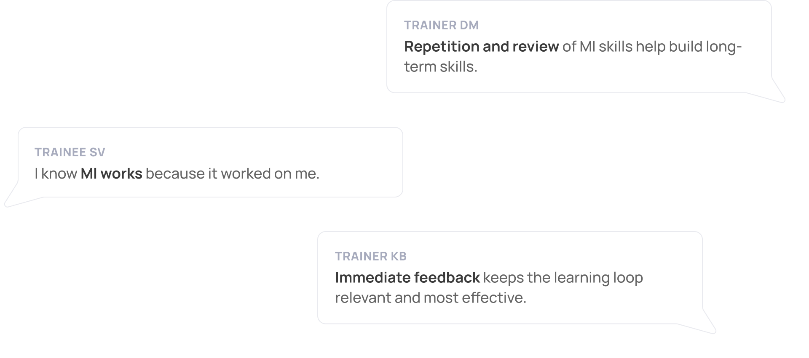
Affinity Diagramming
We then synthesized our findings by
grouping these together and labeling them repeatedly until we derived
four main groups.
Insights
From the previously stated user research methodologies, our team
discovered the following insights:
Incorporate MI through consistent practice and reflection
Regular practice is necessary for Motivational Interviewing skill improvement because
our natural intuition is not enough.
Personal reflection creates a space for deeper learning and
skill development.
Get feedback again and again
Trainees must repeat the cycle of
messing up then getting corrective feedback and doing well
then getting affirmative feedback.
Consider one’s unique learning style
An individual’s learning style must also be a key
consideration when presenting the foundational theory of Motivational Interviewing.
Live by the core principles of Motivational Interviewing
Motivational Interviewing is more than using a set of technical interventions;
it's about following and living by the core principles of Motivational Interviewing.
Personas
After reviewing our research, findings, and insights, we came up with
four distinct persona groups.
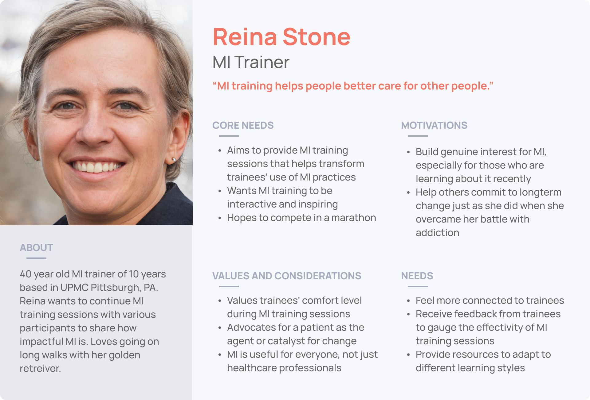
PreviousNext
Scope
How might we provide low intervention practice, feedback, and self-reflection
opportunities for Motivational Interviewing trainees
to build core MI skills?
Ideation
Four-directional approach
Based on our insights and feedback from our client, our team gravitated
toward four potential directions to explore.
Social Support
Automated Practice
Gamification
Asynchronous Learning
Generating Ideas
We grouped ideas together to create categories and help us
narrow down and combine ideas.
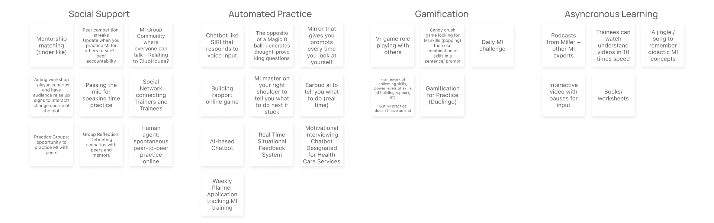
Storyboarding
For each category, we selected 2-3 ideas we wanted to further explore
with a corresponding storyboard. These are some of the storyboards I created:
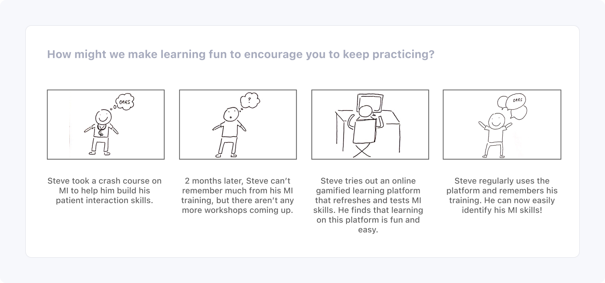
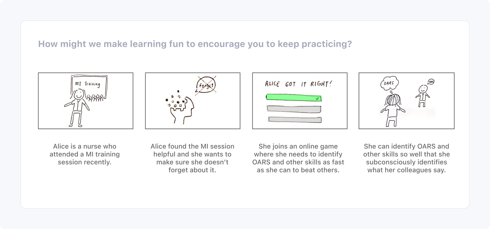
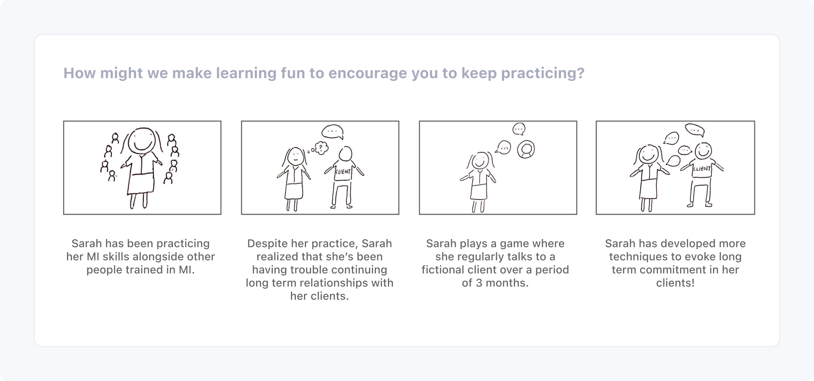
PreviousNext
Speed Dating Interviews
In our speed dating sessions, we presented each storyboard to
8 healthcare professionals who have been exposed to MI training.
We synthesized each session by consolidating notes.
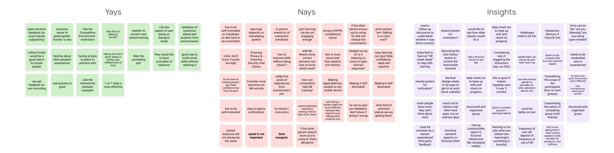
Final Persona
Based on the new findings, we felt the need to bring to light a new persona
that captured our feedback from the speed dating sessions.
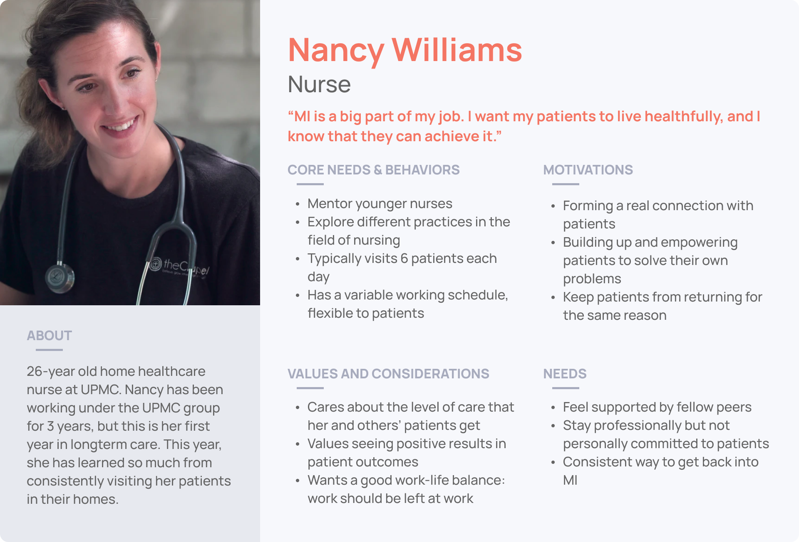
Bundling notes
We then revisited the ideas and bundled together
four ideas based on the yays, nays, and
insights from the speed dating session. We then decided on one direction
listed below.
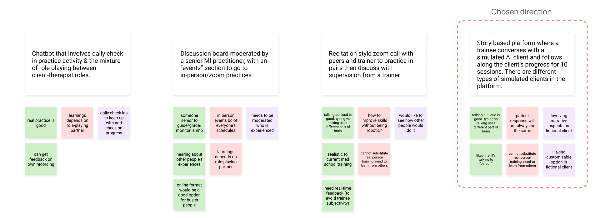
Reality check
Our initial idea involved having a simulated AI agent act as a patient
while a trainee practices using MI and the conversation is recorded.
Through this, the trainee can continue talking with the same patient
and build a long-term relationship.
However, after discussing this
with our client, we realized that the technical capability is not yet
here. We then switched gears and decided to pair up a group of trainees,
with one trainee acting as the patient and the other as a practitioner.
Prototyping
Sketching
We brainstormed and sketched four designs in parallel on
paper.
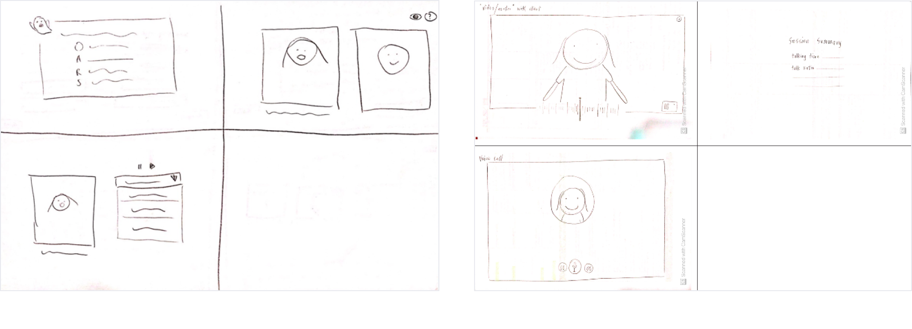
Low-fidelity prototyping
We then discussed and combined ideas as necessary. Because our
solution will be used at work, we envisioned them to be used on a
larger screen (like a desktop or laptop) on a web browser.
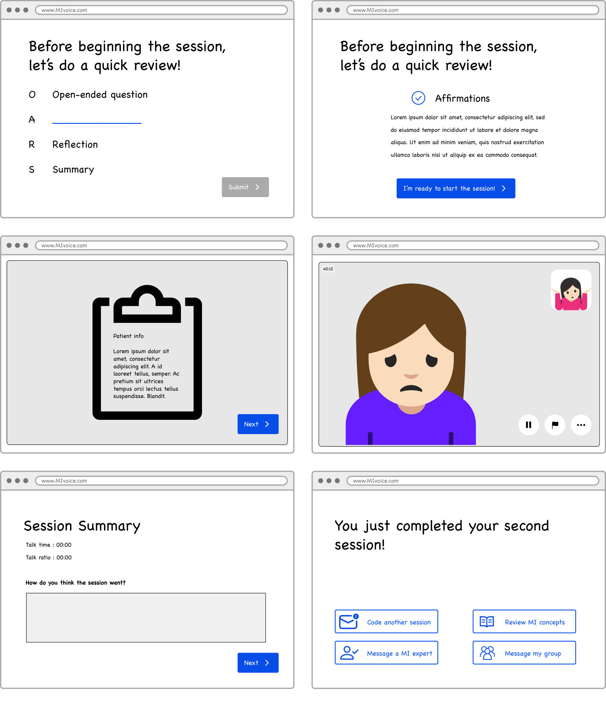
User Testing Outcomes
We had 20 user testing sessions
in total: 4 for low fidelity, 8 for mid-fidelity, and 8 for hi-fidelity.
Between these, we added and modified certain steps
in the user journey based on feedback and user sentiments.
Because it was difficult to have two users test our platform at the
same time, I acted as the patient to simulate
the roleplay practice sessions and discussions. Our final testing was tested by
two users simultaneously, with one acting as a patient and the other as a practitioner.
Patient Session
In the patient session, trainees either act as a patient or a practioner,
and their peer will act as the other role. During the patient session,
users pin to create time marks of effective or difficult instances
for using MI to review and discuss with their peer.
During testing, we found that many users had trouble figuring out
when to pin — they did not receive adequate instruction on pinning.
Discussion Prep and Discussion
To maximize the synchronous platform, Pin-MI allows trainees to discuss
pins in real time. To help facilitate this discussion, users look at notes
that they prepared on the pins.
Testing revealed that navigation of pins was difficult. We also needed
to balance the amount of information being presented to prevent cognitive
overload.
Bridging discussions
User testing showed that users had trouble jumping into the discussion
sessions. Because of this, we added prompts to initiate a more natural
conversation.
Final Solution
What is Pin-MI?
Pin-MI is a web platform for Motivational Interviewing skills building
within an organization. Our vision is for Highmark Health to implement
this platform for their healthcare professionals. Because of this, we
did not focus on creating external incentives to drive the usage of the platform.
Practice by role playing with a peer
Trainees are given brief instructions on their role, their
patient's information, and how to pin. In the 15-minute session,
trainees are given reminders to pin. Trainees create time marks
of effective or difficult instances for using MI to review and
discuss with their peer.
Prep for the peer discussion
Trainees have their own time to prep for the discussion so they have
the space to form their own thoughts first. In the discussion prep,
trainees can add more pins, play the recording, view the transcript,
and add personal notes and notes to be shared with their peer.
Trainees are given five minutes to add notes after their peer has
finished.
Discuss the pins with a peer
Trainees meet their peer once again to discuss the practice session.
They can see all that they saw in the discussion prep, as well as
notes that their peer wants to share.
For each pin, they can also write a collective takeaway from the discussion.
Reflection
Lessons Learned
This has been the most rewarding project I have worked on. I sometimes felt overwhelmed with the
amount of work entrusted to me, but I learned three overarching lessons:
Trust my amazing teammates, admit my shortcomings, and ask for help
Take risks (like pitching the possibility of using a conversational AI agent) —
it's our role to expand what is possible
Take more initiative and create a space for myself within the team — I used my strengths
in visual design and Figma prototyping to the advantage of the team
Say hi to the dream team aka the Time Travelers — we all made it to Pittsburgh eventually!